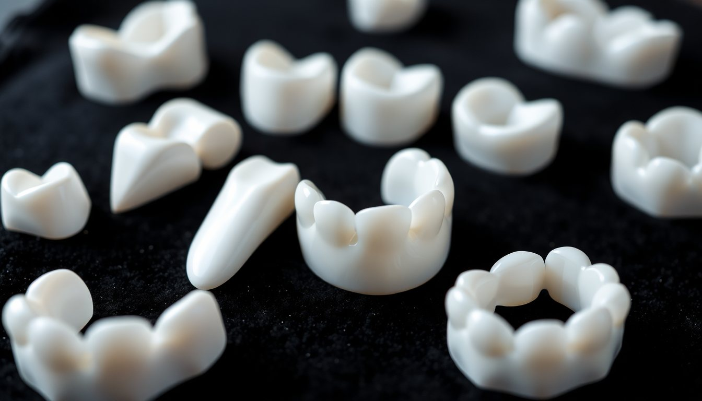
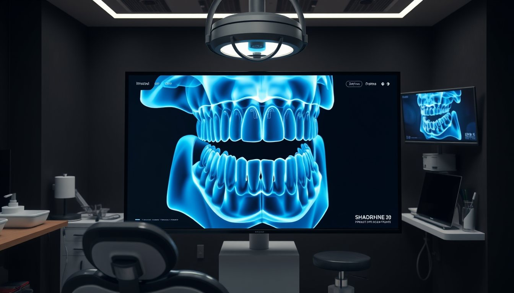
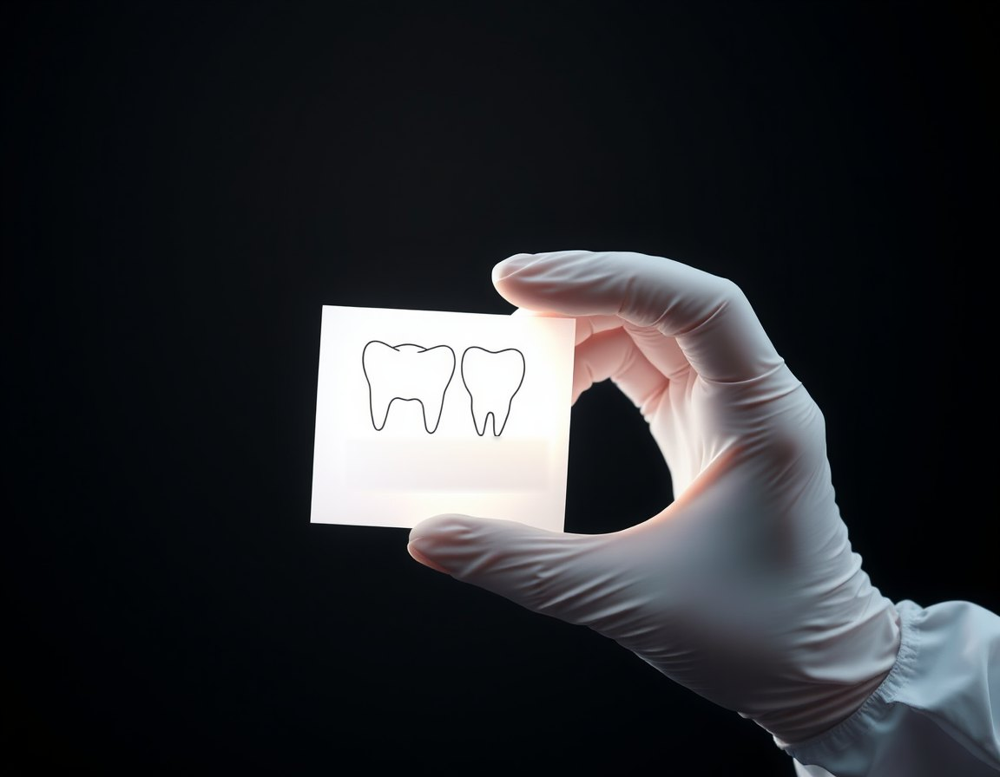
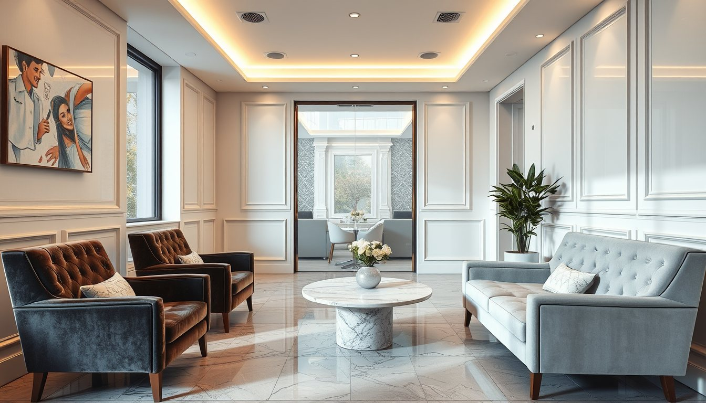

Zirkonyum kron
Metal alt yapı yerine zirkonyum kullanılan, ışığı doğal dişe yakın geçiren kaplamadır. Kırık, geniş dolgulu veya kanal tedavili dişlerde tercih edilebilir.
Seans2–3
Süre7–10 gün
ÖlçüDijital

Doğal görünen, yüzünüze uyan ve uzun yıllar kullanılabilen estetik çözümler için önce dinliyor, sonra planlıyoruz.
Estetik planlamadan önce diş eti, kemik ve çene eklemi değerlendirilir. Sağlıklı zemin olmadan kalıcı sonuç olmaz.
Mümkün olan her durumda diş dokusunu en az aşındıran seçenek önerilir. Her hasta için uygun seçenek farklıdır.
Dijital ön çalışmayı birlikte inceler, seçenekleri, süreleri ve olası riskleri konuşarak karar veririz.

Metal alt yapı yerine zirkonyum kullanılan, ışığı doğal dişe yakın geçiren kaplamadır. Kırık, geniş dolgulu veya kanal tedavili dişlerde tercih edilebilir.
Dişin yalnızca ön yüzüne yapıştırılan ince porselen yapraklardır. Renk, form ve küçük aralık sorunlarında, uygun hastalarda az aşındırmayla uygulanabilir.

Yüz fotoğrafları ve ağız içi tarama ile olası sonuç önceden modellenir. Tedaviye başlamadan ağızda geçici bir prova yapılarak birlikte değerlendirilir.

Klinikte ya da hekim kontrolünde evde uygulanan beyazlatma yöntemleridir. Öncesinde diş eti ve hassasiyet değerlendirmesi yapılır; sonuç dişin yapısına göre değişir.
İyileşmesini tamamlamış implantların üzerine yapılan sabit kron ve köprülerdir. Cerrahi aşama anlaşmalı cerrahi uzmanımızla planlanır.
Süreler bilgilendirme amaçlıdır; her hastanın planı muayeneden sonra netleşir.

Beklentilerinizi dinler, ağız sağlığınızı değerlendiririz. Gerekirse röntgen çekilir.
Ölçü maddesi yerine dijital tarayıcı kullanılır; yaklaşık on dakika sürer.
Form ve renk birlikte seçilir, geçici prova ile ağızda denenir.
Uygulama sonrası ilk hafta ve altıncı ayda kontrol randevusu verilir.
Diş rengi skalada harf ve sayılarla tanımlanır. Doğru ton; ten rengine, göz akına ve yaşa göre seçilir. Skalayı inceleyin:
Toplumda en sık görülen doğal ton. Yüzle en uyumlu sonucu veren seçeneklerden biridir.
Kurucu hekim · Estetik diş hekimliği alanında çalışır. Ege Üniversitesi Diş Hekimliği Fakültesi mezunu.
Protetik diş tedavisi ve dijital planlama. Hacettepe Üniversitesi Diş Hekimliği Fakültesi mezunu.
Koruyucu uygulamalar ve beyazlatma. Pamukkale Üniversitesi Diş Hekimliği Fakültesi mezunu.
Formu gönderdiğinizde hasta koordinatörümüz sizi arayarak uygun gün ve saati birlikte belirler.